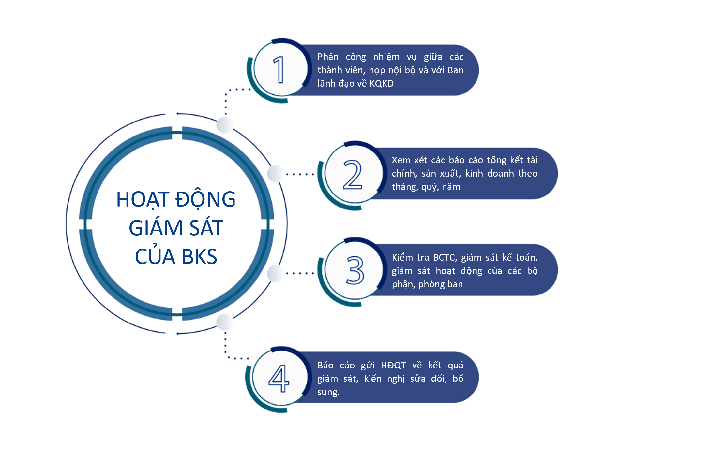

Ban Kiểm soát gồm 03 Kiểm soát viên do ĐHĐCĐ bầu ra để thực hiện các
hoạt động giám sát theo quy định của pháp luật và Điều lệ Công ty.
Danh sách thành viên BKS cụ thể như sau:
| STT |
Thành viên BKS |
Chức vụ |
Ngày bắt đầu là thành viên BKS |
Lợi ích liên quan đến Công ty |
Tỷ lệ tham dự họp |
Tỷ lệ biểu quyết |
| 1 |
Nguyễn Văn Nghĩa |
Trưởng ban |
12/04/2021 |
Không |
100% |
100% |
| 2 |
Đặng Thị Thu Phương |
Thành viên |
09/06/2020 |
Không |
100% |
100% |
| 3 |
Trần Thế Kiên |
Thành viên |
12/04/2021 |
Không |
100% |
100% |
Trong năm 2022, BKS đã triển khai thực hiện các nhiệm vụ, quyền hạn
được quy định tại Điều lệ và Quy chế nội bộ về quản trị của Công ty.
Nhìn chung, hoạt động quản trị, điều hành của HĐQT và BĐH đã tuân
thủ các quy định của Luật Doanh nghiệp, Điều lệ và Quy chế nội bộ về
quản trị của Công ty, triển khai theo đúng định hướng và mục tiêu
kinh doanh đã được ĐHĐCĐ thông qua. Công tác giám sát của BKS được
triển khai thông qua các nội dung chính sau:

Kết quả thực hiện giám sát của Ban kiểm soát với Công ty
Hoạt động giám sát của BKS đối với HĐQT, Ban Tổng giám đốc điều
hành và cổ đông
-
Trong năm 2022, Ban Kiểm soát đã có sự phối hợp chặt chẽ với
HĐQT, Ban Tổng giám đốc điều hành trong công tác kiểm tra,
giám sát tình hình hoạt động sản xuất kinh doanh, tình hình
tài chính của Công ty.
-
Về phía Hội đồng quản trị, Ban Tổng giám đốc và các phòng ban
chức năng đã cung cấp đầy đủ, kịp thời thông tin, tài liệu về
công tác quản lý, điều hành và hoạt động kinh doanh của Công
ty theo yêu cầu của Ban Kiểm soát; tạo điều kiện để Ban Kiểm
soát thực hiện quyền và nhiệm vụ theo quy định của Pháp luật,
Điều lệ Công ty.
-
Về quan hệ với cổ đông: Trong năm 2022, không có văn bản nào
của cổ đông hoặc nhóm cổ đông gửi về Ban kiểm soát để yêu cầu
kiểm tra các vấn đề liên quan đến công tác quản lí, điều hành
của Hội đồng quản trị, Ban Tổng giám đốc và các mặt hoạt động
của Công ty.
Sự phối hợp giữa BKS đối với hoạt động của HĐQT, Ban giám đốc và
các cán bộ quản lý khác
-
Kiểm tra, rà soát các văn bản quản lý nội bộ đã ban hành đảm
bảo phù hợp với quy định của pháp luật mới ban hành và tình
hình phát triển của Công ty.
-
Hàng quý thực hiện thẩm định báo cáo đánh giá công tác quản lý
của Hội đồng quản trị, báo cáo tình hình sản xuất kinh doanh
của Tổng Giám đốc Công ty và thẩm định báo cáo tài chính, đảm
bảo các báo cáo phản ánh trung thực tình hình hoạt động kinh
doanh và tình hình tài chính của Công ty tại thời điểm báo
cáo.
-
Kiểm tra các nghị quyết, quyết định của HĐQT đảm bảo tính phù
hợp về thẩm quyền trong công việc ra quyết định. Tham gia đóng
góp ý kiến và thực hiện vai trò kiểm soát toàn diện (kiểm tra,
giám sát trước, trong và sau hoạt động), nhận diện và kiểm
soát các rủi ro tiềm ẩn trong nội bộ hoặc ngoài Công ty.
-
Kiểm soát việc quản lý và sử dụng vốn nhằm bảo toàn và phát
triển của Công ty.
Kết quả thẩm định Báo cáo tài chính của Công ty
-
Ban kiểm soát thống nhất với các nội dung Báo cáo tài chính
năm 2022 do Ban Tổng giám đốc và Phòng Tài chính Kế toán của
Công ty lập và được Công ty… (đơn vị kiểm toán) kiểm toán. Báo
cáo tài chính đã phản ánh trung thực và hợp lý trên các khía
cạnh trọng yếu của tình hình tài chính của Công ty tại thời
điểm ngày 31/12/2022, phù hợp các chuẩn mực, chế độ kế toán
doanh nghiệp Việt Nam hiện hành và các quy định pháp lý liên
quan. Một số các chỉ tiêu cơ bản thực hiện trong giai đoạn
2021-2022 theo Báo cáo tài chính như sau: